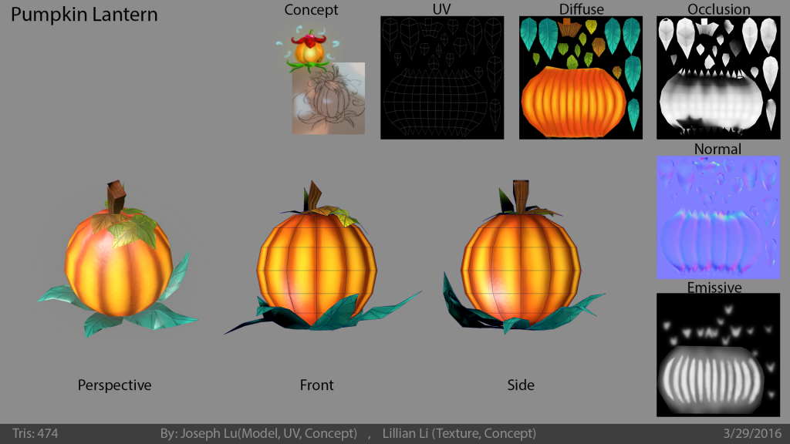
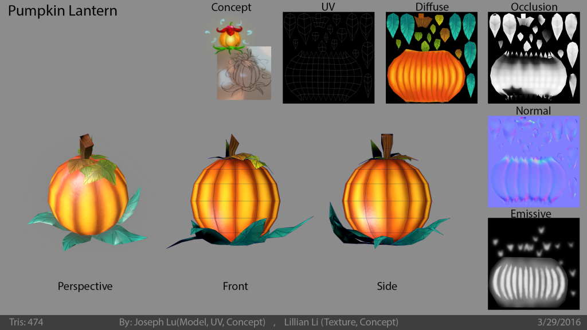

A 3D puzzle platformer where the player plays as firefly called Flicker for has the ability to meld/fuse with electronic devices.
Solve the puzzle laid through a clock tower with your powers and uncover the mystery of where Flicker's friends have gone.
A personal project that I worked with a couple of friend during our free time. Worked as the artist, programmer, and designer.
A mobile bullet hell game where player can parry the enemy spaceships.
The gameplay is similar to Cop vs Cars and it features a low poly art style similar to Mars Mars.
Working with two others as the artist, game designer, and programmer.
Creating all of the art assets, custom shaders, and VFX.
Designed and programmed shop, lottery system, and player progression.
VRsus guARdian - C#
VRsus guARdian is a cat-and-mouse chase between AR and VR player.
One player plays using the AR-enable device whose objective is to protect their relics from
the VR/PC player who is an intruder who is able to hook-shot around the level.
A semester long project consisted of 11 students.
I was the art producer and lead artist in charge of recruiting, onboarding, and lead team members to create
game ready assets following our creative director's art direction.
Project Orion: ChiaroScuro - C#
ChiaroScuro is a cooperative 3D puzzler platformer where players are able to meld/fuse into environment assets.
Worked with a group of 13 students as the environmnet art director and lead artist.
I managed and work with fellow artist in creating environment assets: concept, modeling, texturing, and world building.
VRsus guARdian
×
Summary
Mobile bullet hell where player can parry the enemy spaceships similar to Car vs. Cops.
The main objective is to get the highest scores which trades into in game currency allowing players to purchase more unique ships.
Responsibilities
Worked with two others as the sole artist, one of the game designer, and one of the programmer.
Created all of the art assets: 3D models, GUI, particle system, and custom shadergraphs.
Designed and programmed shop and lottery system.
Balanced game economy and reward system.
Communicating through discord and trello to keep track of our tasks and responsiblities.
Project Information:
Project Length: August 2018 - May 2019
Team Size: 3
Role: Artist, Designer, and Programmer
Software Used:
Images of some of our ships
Summary
VRsus guARdian is a cat-and-mouse chase where one player plays using an AR-enabled device and another player utilizes a VR system.
The goal of the AR Player is to track down the other player and shoot them down, while the goal of the VR Player is to snatch relics placed around the world and escape before getting defeated.
The world is created using the AR scan and environment assets are procedurally place.
The VR/PC player uses these assets to hide and allude the AR player.
The AR player is able to place traps that interferes and locates the VR/PC player who avoids by using their hookshot to move around.
Responsibilities
As art producer worked with other artists in creating the environment
Recruited, on boarded, and led artist to create game ready assets following our creative director's vision
QA assets to ensure that they follow proper format: naming convention, poly count, uv set, and etc
Implemented our team's art production pipeline, managed asset inventory, and imported them into Unity
Modeled game character and environment asset pieces and created particle systems
Used slack for communication and trello for task tracking and asset management
Since the world is procedurally generated we did not have control over where assets spawned.
To solve this issue we created "collections" which is a set of assets that are spawn together to give a feel like an environment
Project Information:
Project Length: February 2018 - May 2018
Team Size: 11
Role: Art producer and lead artist
Software Used:
Here's a trailer for the game:
Visit website
Summary
ChiaroScuro is a 3D puzzler coop that gives players the ability to interact with certain objects in the environment.
The core concept of the gameplay experience is the need for players to progress through levels by solving puzzles with their partner.
The game is exclusively for two players.
The majority of the gameplay is based puzzle oriented platforming challenges.
The objective of the project was to create an original game for the PlayStation 4 console.
This was a semester-long project where we had multiple individuals from the Game Design and Development major and 3D Digital Design on the team.
The project was originally started by four students prior to the semester, but as time went on the project grew and expectation increased so more members joined in.
The team was comprised of 13 students at the end of the semester.
I was recruited as the 3D artist for the project, but later on became the Environment Art Director and Lead Artist.
As one of the core member of the team, I help create the visual look for our game.
I started as one of the 3D modelers for the team, but I had multiple roles during the project: concept art, 3D modeling, UV unwrapping, texturing, lightning, world builder, environment art director.
I worked with the programmer on our team to figure out how to render our models on the PS4.
At the end of the project, we had a workable game with our assets fully rendered on the PS4.
The project was a huge learning experience especially with the amount of work was accomplished by the team.
Working with professors on the game development process was an incredible experience.
The amount of knowledge each member of the team obtained was valuable.
Responsibilities
Managed and worked with the artist in creating the environment
Concepted and model environment assets, QA assets, imported assets to engine, and world building
Created sample of asset as turntable and render it out
Project Information:
Project Length: February 2016 - May 2016
Team Size: 13
Role: Environment art producer and lead artist
Software Used:
Flicker Fortress is a single-player 3D puzzle platformer where player control a firefly called Flicker who has the ability to meld/fuse with electrical devices.
Solve multiple puzzle levels laid through a clock tower with your powers and uncover the mystery of where Flicker's friends have gone.
Backstory:
Once upon a time, there were numerous fireflies flickering around. As time went on, they all vanished.
Now only one remains: Flicker. She must journey through a dark, mysterious clock tower that holds the secret to her missing friends.
Gathering what remains of her brethren inside their encasements.
Can you help her on her journey to find all her friends?
This was a personal project I worked with a group of friends during our free time.
We wanted to create a fun engaging 3D experience.
It was started from a game we previously worked on during college, ChiaroScuro.
We revisisted some of the mechanics and wanted to explore further in developing it.
You can play the game now on itch.io at https://aquilateam.itch.io/flickerfortress
Responsibilities
Modeled and textured the character and game asset using Maya and 3DCoat.
Prototyped levels using ProBuilder and layout puzzles for levels.
Wrote custom shaders and particle effects in Unity
Programmed UI, gameplay, and data management system
Project Information:
Project Length: August 2018 - November 2019
Team Size: 6
Role: Artist, Game Designer, Programmer
Software Used:


 
